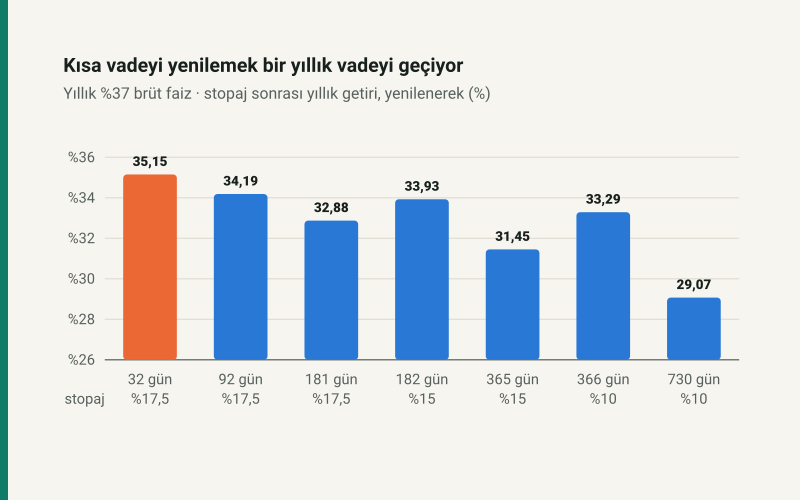

Kısa cevap
Stopaj uzun vadede düşer: 6 aya kadar %17,5, 1 yıla kadar %15, 1 yıldan uzun vadede %10. Ama kısa vadeyi yenileyen, her vade sonunda faizini de anaparaya ekler. Aynı brüt faizde bileşik etki stopaj farkını aşıyor: 32 günlük yenileme bir yıllık vadeyi 3,7 puan geçiyor.
Uzun vadenin asıl avantajı faizi kilitlemesidir. Faizlerin düşmesi bekleniyorsa bir yıllık vade, kısa vadenin yenilemede kaybedeceği faizi korur.
Aynı faiz, farklı vade
| Vade | Stopaj | Yıllık net (basit) | Yıllık net (yenilenerek) |
|---|---|---|---|
| 32 gün | %17,5 | %30,52 | %35,15 |
| 92 gün | %17,5 | %30,53 | %34,19 |
| 181 gün | %17,5 | %30,52 | %32,88 |
| 182 gün | %15 | %31,45 | %33,93 |
| 365 gün | %15 | %31,45 | %31,45 |
| 366 gün | %10 | %33,30 | %33,29 |
| 730 gün | %10 | %33,30 | %29,07 |
Bir yıllık vade ile 32 günlük yenilemenin yıllık getirisini eşitlemek için bir yıllık mevduatın brüt faizi %41,36 olmalı; 366 günlük vadede (stopaj %10) %39,08, iki yıllık vadede %45,92. Bankalar uzun vadeye genellikle daha düşük faiz verdiği için fark çoğu zaman daha da büyüktür.
Faiz riski
Tablo faizin bir yıl boyunca değişmediğini varsayar. Kısa vade faiz düşerse yenilemede daha düşük faizle devam eder; uzun vade bugünün faizini kilitler. Faizlerin yükselmesi beklenirken kısa vade, düşmesi beklenirken uzun vade avantaj kazanır. Hangisinin olacağını bu hesap söylemez; aradaki farkın bedelini ölçer.
Oranları karşılaştırmak için: faiz dönüştürücü. Dövizle kıyas: dolar mı TL mevduat mı?
Kaynaklar
- 193 sayılı Gelir Vergisi Kanunu geçici 67. madde ve 10041 sayılı Cumhurbaşkanı Kararı: vadeye göre stopaj oranları.
- Mevduat hesabı: sitenin vadeli mevduat aracındaki fonksiyon (finans/kurallar.js).
Tablo sitenin açık kaynaklı faiz dönüştürücü modülünden üretilir; mevduat neti mevduat aracının fonksiyonundan gelir ve otomatik testle yeniden hesaplanır.
Sık sorulan sorular
32 günlük mevduat mı, 1 yıllık mı daha çok kazandırır?
Aynı brüt faizde 32 günü yenilemek: yıllık %37 faizle net %35,15, bir yıllık vade %31,45. Faiz değişmezse kısa vade önde.
1 yıllık mevduatta stopaj kaç?
1 yıla kadar vadede %15, 1 yıldan uzun vadede %10. 6 aya kadar vadede %17,5.
Uzun vadeli mevduatın avantajı nedir?
Faizi kilitler. Faizler düşerse kısa vade yenilemede daha düşük faizle devam eder, uzun vade etkilenmez.